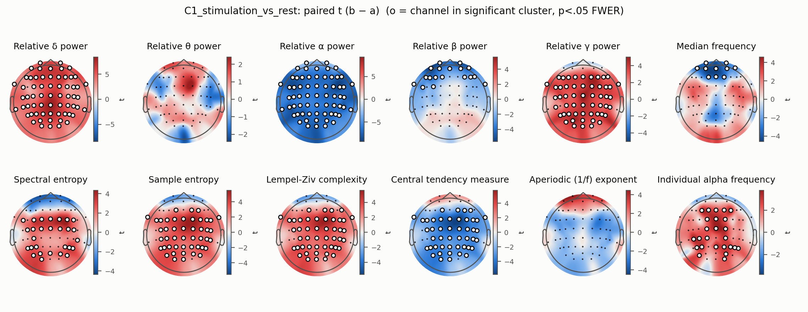
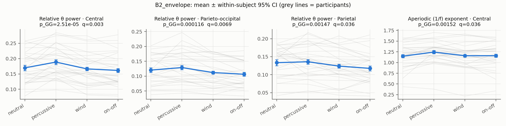
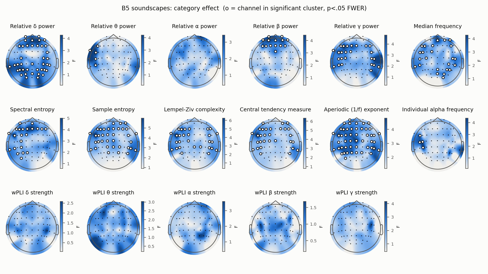
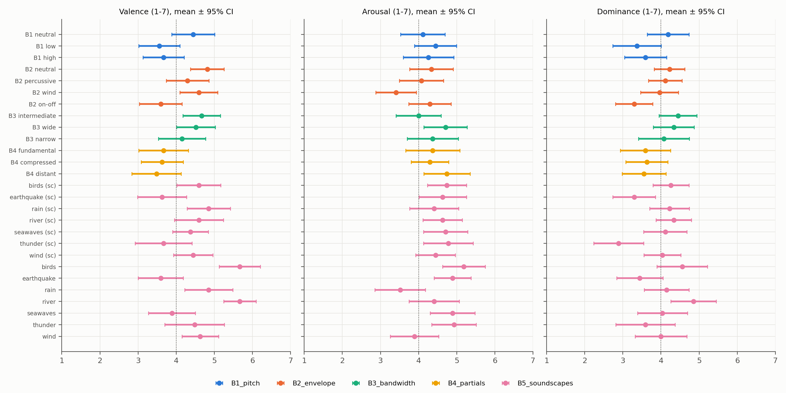
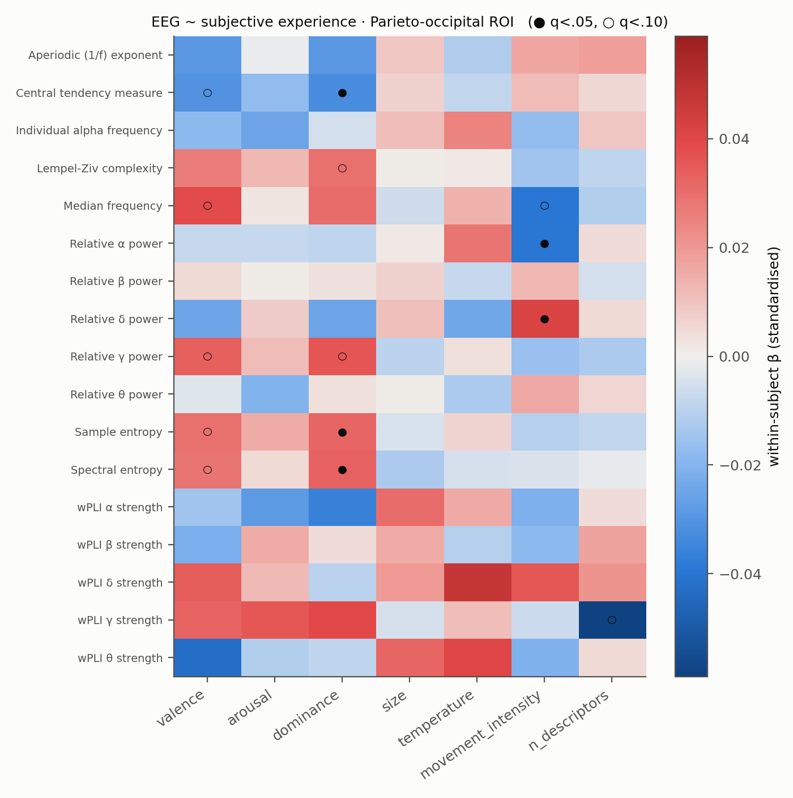
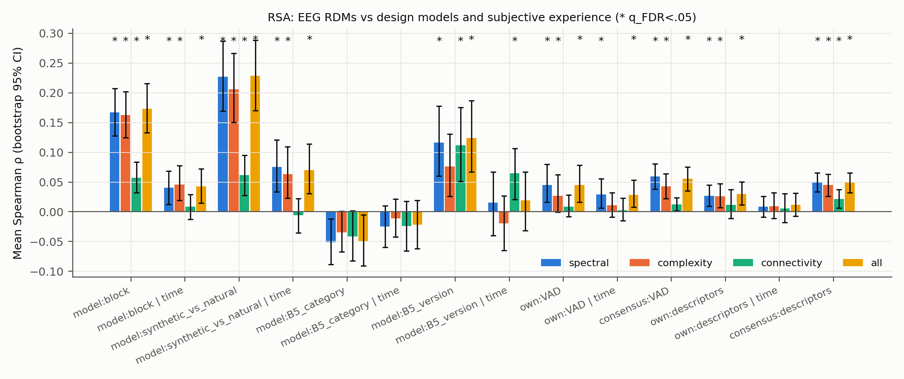

Does listening to artistically crafted sound engage dynamics usually linked to visual processing (spatiality, temporality, sequencing), and does the EEG track listeners' aesthetic experience? Results from 27 listeners, 27 sound stimuli and two resting baselines.
Relative α power fell from rest to stimulation (global dz = −1.70, 95% CI −2.21 to −1.41). The drop was larger over the parieto-occipital "visual" ROI than over temporal "auditory" ROIs (dz = −0.59, CI −0.96 to −0.28, q = .047), with eyes closed in both states.
Within listeners, sounds described with more intense movement went with lower α and higher δ power (global rrm = −.15, q = .001). The association is unchanged after controlling for arousal, valence, dominance, gamma (EMG) power and stimulus identity, and is stronger when only responses that state a speed are used. Caveats: it weakens when listener-specific slopes are modelled (18/27 listeners show the negative direction), it is not specific to posterior sites, and it replicates in synthetic stimuli but not significantly in soundscapes. It is a candidate for a pre-registered confirmatory test.
Across the seven soundscapes (presented in random order) the aperiodic 1/f exponent, sample and spectral entropy, LZC, median frequency and δ/β power differed (e.g. 1/f exponent, global: F = 5.05, pGG = .0009, q = .028).
Block 2 was the only synthetic block surviving FDR (central θ: F = 10.96, pGG < .001, η²p = .30; percussive − neutral dz = 0.58). Within-block order was fixed, so serial position cannot be excluded, although the effect is not monotonic with position.
Higher valence went with higher entropy and LZC and lower CTM, mainly at left temporal sites (rrm ≈ .19, q < .001). Adding gamma power as an EMG proxy shrinks these coefficients by 70–85%. 7 of 29 valence associations remain significant.
In RSA, stimulus-by-stimulus EEG dissimilarity tracked the listener's own valence-arousal-dominance dissimilarity, also after partialling out temporal distance in the session (ρ = .029, CI .008–.053, q = .006).
Both contrasts are perfectly aligned with time in the session (see below). The 'sc' vs original effect disappears once session position is modelled.
Only the order of blocks 1–4 and the order of soundscape categories were randomised. Relative α power rose from the pre- to the post-session rest (41-channel cluster, p = .0006), so time-on-task alone produces EEG changes. In RSA, temporal distance is the strongest single predictor of EEG dissimilarity (ρ = .26).
27 adults took part (14 men, 13 women; age 21–63, mean 40.8 ± 12.2 years; 11 with instrumental music training). Each listened with eyes closed to 27 stimuli of 50 s, organised in five blocks, plus 180 s resting baselines before and after.
| Block | Manipulated parameter | Conditions | Order |
|---|---|---|---|
| B1 Pitch | Register | neutral · low · high | fixed within block |
| B2 Envelope | Temporal dynamics | neutral · percussive · wind · on-off | fixed within block |
| B3 Bandwidth | Filter bandwidth | intermediate · wide · narrow | fixed within block |
| B4 Partials | Harmonic structure | fundamental · compressed · distant | fixed within block |
| B5 Soundscapes | Category × version (2 × 7) | birds, earthquake, rain, river, sea waves, thunder, wind; 'sc' and original | always last; 'sc' first; categories random |
64 channels at 500 Hz; 49–51 Hz notch; 1–70 Hz band-pass; common average reference; 5-s epochs, z-normalised per epoch; amplitude-threshold artefact rejection. A median of 9 clean epochs remained per stimulus. 9 condition recordings were unavailable (8 missing, 1 with fewer than 5 clean epochs).
Because epochs are z-normalised, mean, variance and absolute power carry no information and were excluded (verified empirically).
Relative power in δ, θ, α, β and γ. Median frequency, spectral entropy, sample entropy, Lempel-Ziv complexity and the central tendency measure. Aperiodic (1/f) exponent and individual alpha frequency, both from the PSD. wPLI node strength in five bands.
Values were aggregated per channel as the median across epochs. They are summarised in six a-priori ROIs plus the global mean.
After each stimulus: valence, arousal and dominance (1–7), an emotion code (emotion category and intensity 1–4), and free descriptions of the imagined image's colour, size, movement, temperature and texture. Free text was coded with explicit rules plus manual corrections after reviewing every unique response: size (0–4), temperature (−1 to +1), movement intensity (0–3) and spatial trajectory (yes/no). Blind validation by a human rater is pending.
Both all stimuli and the neutral sound alone produced the same pattern compared with eyes-closed rest. α and β power decreased and δ and γ power increased. Signal complexity rose (sample entropy dz = 0.56, LZC dz = 0.62) and CTM fell (dz = −0.58). The individual alpha frequency shifted upwards at central-parietal sites.

| Relative power | Δ parieto-occipital | Δ temporal | dz (visual − auditory) | q |
|---|---|---|---|---|
| α | −0.098 | −0.063 | −0.59 [−0.96, −0.28] | .047 |
| δ | +0.065 | +0.039 | 0.52 [0.20, 0.90] | .047 |
| β | +0.005 | −0.011 | 0.54 [0.14, 1.02] | .047 |
Table 1. H3 contrast: the change from rest is larger over the parieto-occipital ROI than over temporal ROIs (stimulation vs rest).
Among the synthetic blocks, only the envelope block (B2) survived FDR correction. The percussive envelope raised central and parietal θ and δ power, lowered frontal α, and steepened the aperiodic slope relative to the neutral sound. Pitch (B1) and bandwidth (B3) produced only nominal clusters (θ power, IAF, α wPLI) that did not survive correction; partial structure (B4) produced none.

Within the soundscapes, category was the only factor whose order was randomised. It modulated the 1/f exponent (49-channel cluster, p = .0002), δ power (40 channels), sample and spectral entropy, LZC, CTM and median frequency. The version effect ('sc' − original: more δ, less α and β) was significant in the ANOVA but disappeared in mixed models controlling for session position (p = .28–.57). This is consistent with the time-on-task drift.

Stimuli differed in valence (LRT χ²(26) = 118.5, p < .001), arousal, dominance, emotion intensity, imagined size, temperature and movement intensity (all q < .01). Spatial trajectory and number of descriptors did not differ (q > .15). Emotion category was associated with stimulus identity (Cramér's V = .31, permutation p < .001). Single-listener agreement was low, as expected for aesthetic judgements, but stimulus means were reliable. Valence and imagined size were the most consensual.

| Rating | ICC single listener [95% CI] | ICC stimulus mean, k = 27 [95% CI] |
|---|---|---|
| Valence | .13 [.07, .18] | .82 [.74, .89] |
| Imagined size | .15 [.00, .30] | .82 [.66, .98] |
| Temperature | .12 [−.01, .24] | .73 [.52, .94] |
| Movement intensity | .06 [.01, .11] | .68 [.49, .87] |
| Dominance | .06 [.00, .12] | .67 [.45, .88] |
| Arousal | .04 [−.01, .09] | .56 [.26, .85] |
| Spatial trajectory | .01 [−.01, .04] | .28 [−.15, .72] |
Table 2. Inter-listener agreement from a crossed random-effects model (stimulus × listener) using all ratings; leave-one-listener-out jackknife CIs.
Of 833 trial-level tests (17 features × 7 ROIs × 7 ratings), 79 survived FDR correction, against about 42 expected at p < .05 by chance. All 79 held with a crossed stimulus random effect, so they reflect listener-specific experience beyond what the stimulus explains. The two families behave differently under the EMG control:
| Rating | Main EEG correlate | Within-listener β (global/ROI) | Survive gamma control |
|---|---|---|---|
| Movement intensity (see robustness note) | ↓ relative α (all ROIs), ↑ δ parietal/parieto-occipital | α global −0.037 [−0.054, −0.020] | 11 / 11 |
| Temperature (warmer) | ↑ parietal α, ↓ left temporal δ | α parietal 0.032 [0.010, 0.054] | 2 / 2 |
| Valence | ↑ entropy and LZC, ↓ CTM, flatter 1/f, mainly temporal | CTM left temporal −0.083 [−0.114, −0.051] | 7 / 29 |
| Dominance | ↑ complexity and γ wPLI | wPLI γ global 0.062 | 5 / 25 |
| Arousal | complexity, temporal | — | 0 / 4 |
Table 3. β values are standardised; EEG values are z-scored over all observations. Repeated-measures correlations are about 3× larger (|rrm| ≈ .10–.20). Models assume a common slope across listeners.

The between-listener consistency of EEG geometry was substantial (noise ceiling lower bound ρ = .21). Design models fit well, but mostly through temporal proximity: the block model drops from ρ = .17 to .04 once time is partialled out. The listener's own VAD geometry remains significant after the time control (ρ = .029), whereas the descriptor geometry does not (ρ = .012, q = .16).
